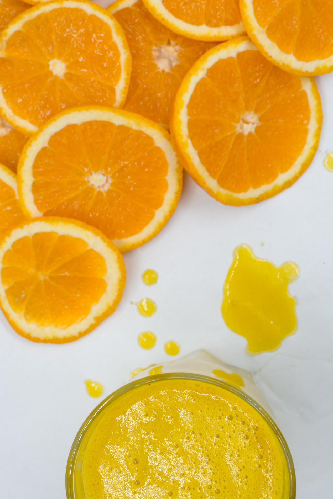

English
English
 繁體中文
繁體中文

要判斷你是否適合自體脂肪隆乳，首先觀察你是否都胖在胸部以外的部位，尤其腰、腹部、手臂、大腿、臀部存有過多脂肪，如果想藉由手術減肥的同時，兼具乳房增大的效果，那自體脂肪隆乳就非常適合。
除了都胖在胸部以外的部位外，若有左右胸部大小不對稱、產後乳房變形或想豐胸但不能接受假體植入，都適合選擇自體脂肪隆乳的方式。
自體脂肪隆乳的填充物，顧名思義就是你本身的自體脂肪，不同於其他使用假體或填充物的方法，脂肪抽出進行回填後，身體比較不會有過敏與排斥的問題。
另外，因脂肪沒有固定形狀，可用於填補身體各部位，外觀上相較於假體，也會更自然、更接近真實觸感。術後恢復期也比較短，即便做完手術，隔天也能正常上班，幾乎不會影響日常生活。
既然這麼好，你一定會想問，能維持多久的時間？
進行自體脂肪隆乳後，維持時間的長短，關鍵取決於脂肪的「存活率」！一般而言，存活率會跟患者的體質、皮膚鬆緊度及醫師的抽脂技術有關，在術後3個月，若脂肪都能停留在手術部位，幾乎就能永久保留！
要讓脂肪完整留在手術部位，脂肪存活率就一定要提高，根據診所以往的案例，多數人平均的脂肪存活率為50％－70％，其中影響的關鍵，就在於術後保養，這些NG的日常習慣，就是讓脂肪存活率下降的元凶！
1、不能抽菸
香菸中的尼古丁成分，會讓血管收縮，延遲傷口的癒合，導致脂肪存活率下降，術前一周、術後保養期間皆不適合抽菸。
那不含尼古丁成分的電子菸可以嗎？
根據目前的文獻資料，雖然還不能證明電子菸和傳統香菸一樣，會對手術造成影響，但都已經花大把鈔票做隆乳手術了，還是慎重一點，避免接觸電子菸。
2、不能劇烈運動
術後保養期間，高強度的運動會燃燒脂肪，導致脂肪存活率下降，不過簡單的運動倒是可以。
術後一周後，可以先以散步、健走的方式運動，一個月內以下半身的運動為主，不過要避免運用到胸肌的動作，太過激烈的運動就不適合，平常若有重訓習慣，需要先暫停。
術後一個月後，可做簡單的擴胸運動，但需注意強度循序漸進，來鍛鍊身材的線條美感。
3、不能刻意減肥
很多人常有錯誤觀念，怕抽脂後的窈窕身材，會因正常飲食而回復原狀，甚至有些患者還會靠吃減肥藥，來降低復胖機率。
要根除這個錯誤觀念，必須先了解減肥藥的功能。減肥藥的功效是讓脂肪細胞中的脂肪被利用，讓細胞變小且萎縮，不過一增加熱量攝取就會復胖，和抽脂讓脂肪細胞永遠減少不同。
隆乳所植入的脂肪也一樣，一但吃下減肥藥，縮小了脂肪細胞，自體脂肪豐胸後的胸部當然也會受到影響，尤其術後的三個月，是脂肪細胞能不能有效存活的關鍵，在這段時間內吃下減肥藥，就等於是前功盡棄。
除了根除掉錯誤的日常習慣，若能配合飲食調整，能達到更好的效果！
1、多攝取蛋白質
自體脂肪隆乳後，飲食也是很重要的一環，這邊要教你如何吃，既能維持高脂肪存活率，又能不復胖的方法！
術後因身體的組織和傷口，處於極需修復的階段，這時最需要的就是足夠的蛋白質，是傷口癒合最重要的營養素，好的白肉蛋白質，都有助於人體造血，常見的「術後修復聖品」鱸魚湯也是不錯的選擇。
或者每天喝一杯高蛋白飲品，像是酪梨牛奶、豆漿等，也能提高脂肪存活率。富含膠質的食物也有助於傷口癒合，可以多吃豬腳、豬皮、魚肚、黑木耳等。
2、 多攝取維生素、礦物質
除了蛋白質外，充分幫助新陳代謝的維生素、礦物質，也是不可或缺的營養素B群能增加身體對蛋白質的吸收、維他命C可以促進膠原蛋白生長，幫助傷口癒合、維他命E則可促進疤痕軟化。
3、 少吃澱粉、刺激性食物
澱粉類、含糖食物、過熱、刺激性的食物，必須減少攝取量，避免身體產生發炎反應，不但延緩傷口復原的時間，甚至可能讓傷口留下疤痕。
醫生也建議，恢復期間最好能增胖1~2公斤，讓脂肪細胞吸收更多養分，豐胸效果看起來更好。